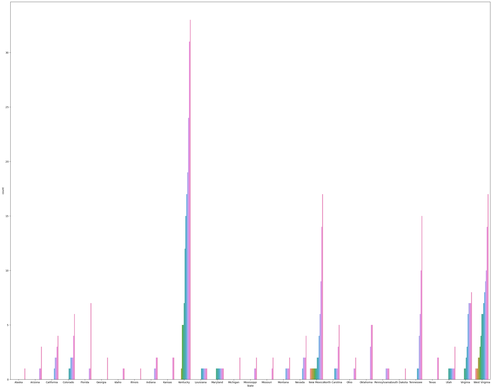
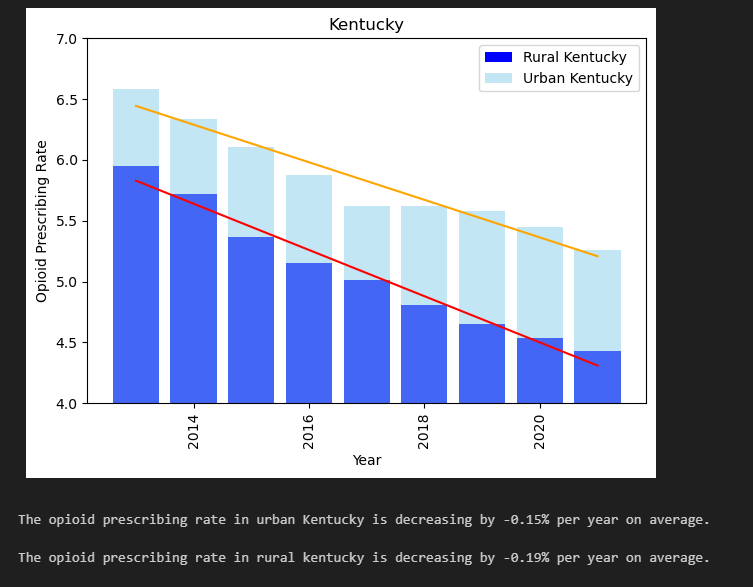
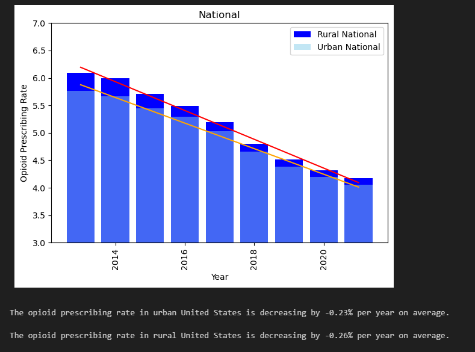

During the course of this project we're targeting an indepth analysis of the opioid pandemic
as it relates to morality rates across the country. We were able to gather some open data
sources across the web and through the power of Data Engineering and Visualizations we came
up with the below synopsis as told through the power of fancy maps and charts
Eventually what we ended up finding even more interesting was an even deeper dive into
looking at the opioid presccription rates and its relationship to the mortality rates.
We decided to zone into the most affected areas and see what are the local opioids prescription trends over time
and summize if there is any correlation between the high mortality rates and prescription rates
We came to see that amongst all the states, a high concentration of the counties with highest death rates through a span of 15+ year, a majority of them were in the appalachian region of the country (see Kentucky, Virginia, West Virginia, Tennessee)
So what do we see with the prescription rates in these states compared to national numbers?
 